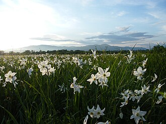
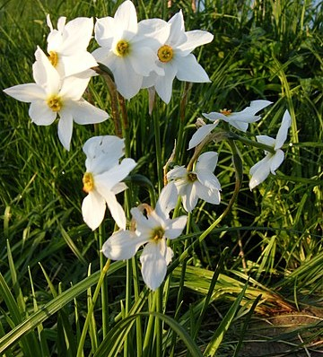

Розташування
Заповідник розташований на висоті 180–200 м над рівнем моря, в північно-західній частині Хустсько-Солотвинської улоговини, на стародавній терасі Тиси. Заповідна територія займає рівнинну ділянку в заплаві річки Хустець. Поряд з природними водотоками на території масиву розташовані штучні— канали меліоративної системи.
Історія заповідника
Поява закарпатської реліктової Долини нарцисів пов'язана з льодовиковим періодом. Деякі вчені вважають, що тоді сталися певні геологічні катаклізми й з гір сповз величезний шмат землі разом з унікальними рослинами. Після сходу льоду з гір стікало багато води, що сприяло акліматизації, цвітінню і розповсюдженню нарциса вузьколистого. З часом, в низовині від сучасного Мукачева до Хуста, де росли нарциси, з'явилися дубові ліси. Після того, як на цих землях стали здійснювати господарську діяльність, площа зростання нарцисів зменшувалася.
За часів Австро-Угорщини урочище Кіреші належало до лісництва і пильно охоронялося. На його території росли лікарські рослини, якими місцеві медики лікували хворих. Коли територія Закарпаття відійшла до Чехословаччини, частину цих земель продали жителям Хуста. Тодішні місцеві мешканці ставилися до природи з великим розумінням. Випасати худобу на заповідних землях їм дозволялося до Юрія, а господарювати знову можна було тільки з 14 жовтня.
За радянських часів долину хотіли переорати, щоб вирощувати сільськогосподарські культури. У 1980-х рр. на території заповідника здійснювалися осушувальні роботи, внаслідок яких суттєво змінився рослинний покрив. Після того, як було знищено 50 га нарцисів, оранку припинили та передали територію з нарцисами заповідному масиву Карпатського біосферного заповідника. Значний особистий внесок у справу збереження та відтворення «Долини нарцисів» зробив В. І. Комендар (який, власне, і дав цю назву долині).
Наукове значення
«Долина нарцисів» — унікальний ботанічний об'єкт, в якому охороняється найбільший у Середній Європі осередок нарцису вузьколистного(Narcissus angustifolius). Цей середньоєвропейський високогірний вид поширений в Альпах, на Балканах і в Карпатах на висотах 1100–2060 м. Популяція в цьому рівнинному локалітеті збереглася з післяльодовикового періоду і має реліктовий характер. У 1980 році нарцис вузьколистий занесено до Червоної книги України.
Туристична привабливість
Разом з величезним науковим значенням «Долина нарцисів» становить і значну естетичну цінність. У період масового цвітіння (друга — початок третьої декади травня)«Долина» вкривається майже суцільним білим килимом квітучих нарцисів, помилуватися яким приїжджають звідусіль.
Переглянути відео на ютуб каналі Ukrinform Press Center в новій вкладці
Екологічний стан Заповідника
Вчені відзначають значні зміни рослинного покрову впродовж останніх 25 років, зокрема, зменшення лук площа справжнього. Колись гостролистий нарцис вкривав сотні гектарів землі, тепер щороку площа його зростання меншає. 2006 року науковці, що досліджують цей куток природи, вдарили на сполох — нарциси почали висихати від недостатньої вологості ґрунту. Виявляється, останніми роками змінився гідрологічний режим ґрунтів, і квітам не вистачає вологи. Задля збереження долини екологи пропонують заборонити проїжджати тут автомобілями, зняти довкола асфальт, насадити дерева й зволожити землю.
Іншою серйозною проблемою для екологічного стану заповідної ділянки є масовий наплив туристів у сезон цвітіння нарцисів та варварське ставлення до квітів. У період масового цвітіння квітів «Долина нарцисів» приймає в середньому по 4—5 тис. відвідувачів на добу. На території масиву прокладені дороги, збудовані спеціальні майданчики для спостереження за квітами; у період цвітіння нарцисів охорона заповідної ділянки підсилюється лісниками з інших масивів області, але все одно цінні квіти масово зриваються та витоптуються туристами.
Місцеві легенди
Колись у сиву давнину в Хустському замку жили князь, княгиня та їхня красуня-донька Руся. На околиці міста проводив життя гончар Іванко. На день Русиного повноліття до замку прийшло багато сановитих візитерів та містян з дорогими гостинцями. Іванкові кортіло теж зробити подарунок — це була дивовижна ваза, на якій, наче живі, мерехтіли квіти граціозного білого нарциса. У цю мить Іванко та Руся закохались одне в одного. Після того вони стали крадькома зустрічатися у мальовничій долині. Та одного разу князь довідався і так зшаленів, що схопив Іванкову вазу і жбурнув з княжої гори. Ваза розбилася об скелину та розсипалась по долині дрібним дощем. Коли зійшло сонце, то всі побачили, що придолинок вкритий біло-зеленим нарцисовим килимом.
Популярна народна легенда, за якою поява унікальної Долини нарцисів пов'язана з історією Нанківської чудотворної ікони Пресвятої Богородиці...
Переглянути відео на ютуб каналі студії Арт Відео в новій вкладці